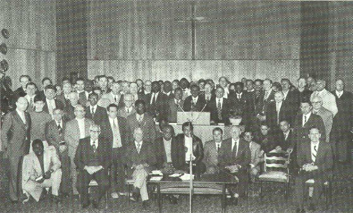

“Jésus-Christ est le même hier, aujourd’hui, et éternellement” (Hébreux 13.8).
LETTRE CIRCULAIRE N° 7
JUILLET 1976
C’est du fond du coeur que je salue chacun de vous, en Europe et dans le monde entier, au Nom de notre Seigneur Jésus-Christ, par ces paroles d’Actes 1.3:
“Après qu’il eut souffert, il leur apparut vivant, et leur en donna plusieurs preuves, se montrant à eux pendant quarante jours, et parlant des choses qui concernent le royaume de Dieu”.
La première question que nous avons à nous poser, en tant que croyants, c’est de savoir si le Seigneur peut également attester que, pour nous aussi, Il est le Vivant et le Ressuscité. Dieu n’est pas mort, Il n’est pas le Dieu des morts, mais Il est le Dieu des vivants. Il ne Se laisse pas traiter de Dieu mort, et l’on ne peut pas rechercher le Seigneur vivant parmi les religions mortes. Personne ne Le trouvera là. Le Seigneur est présent seulement là où Il peut Se révéler comme étant Vivant, là où, par Son Esprit et Sa Parole, Il suscite dans le coeur des hommes une vie nouvelle. Il est là où l’on accorde, à Lui-même et à Sa Parole, une foi entière et une pleine confiance. Il a fait cette promesse: “Encore un peu de temps, et le monde ne me verra plus; mais vous, vous me verrez … Et voici, je suis avec vous tous les jours, jusqu’à la fin du monde”.
Dans les quatre Evangiles, il nous est relaté de quelle façon le Seigneur Jésus a rendu sur la terre un puissant témoignage par Son ministère. Il allait de lieu en lieu, faisant du bien et guérissant tous ceux qui étaient sous l’empire du diable; et Il aidait tous ceux qui Le cherchaient. Les apôtres purent témoigner plus tard que le Seigneur Jésus, après Ses souffrances, Sa crucifixion et Sa descente dans le tombeau, était victorieusement ressuscité le troisième jour, car Il S’était fait connaître aux Siens de la même manière qu’auparavant. Il pouvait dire: “Tout pouvoir m’a été donné dans le ciel et sur la terre … J’étais mort; et voici, je suis vivant aux siècles des siècles. Je tiens les clefs de la mort et du séjour des morts”.
La publication biblique de l’Evangile comprend ce que le Seigneur fit en ce temps-là et, simultanément, elle fait espérer que le même Seigneur Se fasse connaître de la même manière dans Son Eglise.
Lors des dernières rencontres que nous avons eues avec les frères venus du monde entier, Golgotha était le centre de l’adoration. Sans la Croix et Le Crucifié, il n’y a point de délivrance du péché et de la mort, et il n’y a point de Vie éternelle. Seul, celui qui dans la foi regarde à Jésus-Christ comme à Son Rédempteur, reçoit le plein salut et la grâce de Dieu. Aujourd’hui encore, la prédication de la Croix est le message triomphant, et elle est la puissance de Dieu pour tous ceux qui croient de tout leur coeur en Jésus-Christ. Nous devons donc nous tenir sur ce fondement victorieux pour recevoir ce qui nous est donné par grâce par Jésus-Christ, le Fils de Dieu. Conformément aux Saintes Ecritures, le Seigneur Jésus a vaincu toutes les puissances de l’ennemi par Sa mort sur la Croix, et Il nous a fait don d’une pleine délivrance et d’une parfaite libération pour l’esprit, l’âme et le corps. La foi, produite par le Saint-Esprit, est la victoire qui a vaincu le monde. Ce n’est que là où le message de Jésus-Christ, crucifié et ressuscité, est publié dans la foi et avec puissance, que les gens peuvent expérimenter leur libération intérieure, et entrer en possession de ce que Dieu a promis. Par le Saint et Précieux Sang de l’Agneau de Dieu qui a coulé à Golgotha, l’acte de notre reconnaissance de dettes a été déchiré, nos péchés ont été pardonnés, la faute a été couverte, et l’inimitié enlevée. Toutes les dominations et les autorités de Satan ont été dépouillées de leurs armes, et livrées publiquement en spectacle. La Toute-puissance de Dieu triompha en Christ sur toute la puissance du diable (Col. 2.12-15). En mourant, Jésus-Christ, le Fils de Dieu, S’écria: “Tout est accompli!”. L’oeuvre de rédemption a été achevée pour nous tous, afin que, par Lui, nous puissions devenir des fils de Dieu.
Tous ceux qui ont été présents lors des rencontres spéciales que nous avons eues à Pâques parleront sans doute encore dans les semaines et les mois à venir de ce que Dieu a fait. Nous pouvons tous témoigner que le Seigneur a confirmé d’une manière puissante Sa présence au milieu de nous par Sa Parole et par Son Esprit. Jésus-Christ S’est montré comme étant Le Ressuscité, de la manière que les Saintes Ecritures Le présentent. Souvent, des personnes ont exprimé l’avis qu’elles n’avaient encore jamais expérimenté de telles réunions. Presque un millier de personnes, venant de toute l’Europe et de nombreux pays d’outre-mer, se sont réjouis avec nous de l’action particulière de l’Esprit de Dieu. Dans chaque service, nous avons persévéré dans la prière en commun, et nous avons expérimenté les dons de l’Esprit en action comme dans le christianisme du début. Le Seigneur donna des visions, Il montra certaines choses, et parla au milieu de nous par prophétie et parler en langues.
Avant que les grands rassemblements n’aient commencé, le 15 avril, pendant le rassemblement pour la prière, le Seigneur nous donna par l’Esprit la révélation suivante: «Voici, ainsi dit le Seigneur! Mon peuple, sois plein d’assurance en cette heure! Car sachez bien ceci: Ma grâce est sur vous, et c’est Moi qui ai décrété cette heure et ces journées. Ma grâce est sur vous, et Je vous visite toujours à nouveau. Oh, si vos yeux étaient ouverts, vous pourriez voir l’Arc de Mon Alliance étendu sur ce lieu en tout temps; non seulement cela, mais Je suis aussi dans la nuée ici, et Je séjourne sur la plate-forme, et Je suis avec vous; vous verrez bientôt Ma gloire. Et voyez, J’ai préparé la parure de Ma Fiancée, et, très bientôt, vous la recevrez dans la gloire. L’heure est proche. Mes enfants, prenez courage!».
Nous pourrions nous arrêter sur chaque phrase, et sur chaque pensée de cette prophétie, et entrer dans les détails. Nous étions tellement heureux que le Seigneur nous ait donné une telle confirmation pour ces rencontres. C’est bien le voeu de notre coeur d’être trouvé dans la seule volonté de Dieu, car précisément de nos jours, tant de choses sont faites qui se donnent pour être de Dieu. Nous ne voulons dire que ce qu’Il a dit, et ne faire que ce qu’Il veut. Notre désir consiste à n’être qu’une partie de Ses plans et de Ses oeuvres dans ce temps. «Non pas notre propre chemin, non plus notre propre volonté, mais Toi seul, dispose de tout!».
Le Seigneur révèle au milieu de Son peuple toujours à nouveau Sa volonté par la Parole et par l’Esprit. Il confirme Son alliance avec nous et nous visite dans Son amour, et Il nous réjouit par Sa présence. De même qu’Abraham, nous aussi, nous expérimentons les promesses divines, et croyons ce que le Seigneur a dit.
Le 22 avril, le Seigneur nous parla par prophétie, disant: «Voici, ainsi dit le Seigneur! A vous, Mon peuple qui êtes rassemblés à cet endroit, Je veux vous parler dans cette heure. Ne croyez pas que Je sois seulement Celui qui bénit. Non. Je me suis montré très souvent comme étant le Juge, et aujourd’hui encore, Je suis ici comme Juge, et Je vois au-dedans de vos coeurs, Je vois au-dedans de vos pensées … Beaucoup recherchent l’unité en vue des choses terrestres, pour la prospérité terrestre; et non pas ce que Je veux donner de Ma Parole, non pas ce qui purifie vos coeurs, non pas ce qui unit dans l’amour, mais ce qui unit dans les choses terrestres. Mais Je suis un Dieu qui ne S’intéresse pas en premier lieu à votre prospérité terrestre; mais Je M’intéresse à ceci: à ce que vos coeurs soient purifiés, et que vous receviez la nourriture pour vos âmes, et que l’unité de l’Esprit vienne, et non pas l’unité de la chair. C’est ce que dit le Saint au milieu de vous…!».
Celui qui connaît les Ecritures, connaît la nécessité de l’unité venant de Dieu dans l’Eglise de Jésus-Christ. Elle ne peut être accomplie que par le Saint-Esprit, sur le fondement biblique. Les hommes essaient d’établir leur propre unité d’une manière terrestre. Beaucoup d’entre eux qui se disent croyants n’ont pas reconnu ce que le Seigneur Dieu fait en ce temps. Même ceux qui ont reçu un enseignement plus approfondi dans la Parole de Dieu, et une plus grande lumière, par le moyen du ministère de frère Branham, doivent se laisser libérer pleinement de toute propre manière de voir les choses, afin de se soumettre pleinement à la direction du Saint-Esprit. Le jugement divin commence par la maison de Dieu. Le Sauveur est aussi le Juge. Il Se tient à la porte (Jacq. 5.9). La Lumière et la Justice de Dieu doivent être à nouveau révélées parmi les Siens.
Dans un chant en langues, qui fut donné par l’Esprit dans une autre langue, puis fut chanté à nouveau dans notre langue, il était dit ceci: «L’Epouse est préparée maintenant dans le plus brillant éclat de sa magnificence. Oui, Je l’ai conduite hors des ténèbres les plus épaisses. Oui, Je l’ai guidée ici, en ce lieu, car ici s’accomplit aujourd’hui la Parole de l’heure.
Oui, Mon serviteur est rempli de Mon Esprit et de Ma Parole, et il continue à brandir l’Epée de l’Esprit. L’Amérique n’a pas reconnu que Ma main s’était tournée vers ce pays pour le bénir, c’est pourquoi, laissez-la aller ainsi».
Il est très important que les croyants discernent l’action de Dieu et que, saisis par le Saint-Esprit et reconnaissants dans leur coeur, ils aient une part à ce que Dieu fait maintenant. Nous savons que l’Amérique a été bénie d’une manière toute particulière, mais nous savons tout aussi bien que Dieu appelle Ses élus de tous peuples, de toutes langues et nations.
Chaque message envoyé par Dieu est parvenu aux extrémités de la terre. Le 15 janvier 1963, frère Branham disait: «Pendant les quinze, seize années durant lesquelles j’ai été sur le champ de mission, j’ai été réservé, dans ces choses. Cependant, l’heure vient où quelque chose est sur le point d’arriver. Le message s’en ira à une autre nation, à un autre peuple. Je crois que l’Eglise en Amérique est presque priée de sortir…».
Dieu fait ce qu’Il veut. Dans Son Royaume, personne ne peut raisonner d’une manière nationaliste; au contraire, nous devons être pleinement libérés de cela. Il s’agit de reconnaître que le Seigneur a Sa manière de faire avec les Siens. Il emploie le peuple, parmi lequel Il trouve l’instrument dont Il a besoin, afin d’accomplir Ses ordres pour une période déterminée, et afin de publier à nouveau Sa Parole et Sa volonté.
Partout, de nos jours, il a été publié que Jésus-Christ était ressuscité d’entre les morts. Nous avons le droit de poser la question: «A qui le Seigneur est-Il apparu, où a-t-Il confirmé qu’Il était le Ressuscité et le Vivant?». Ce qui est écrit sur Celui qui marche au milieu des sept chandeliers d’or est encore valable: “De sa bouche sortait une épée aiguë, à deux tranchants”. L’épée de l’Esprit est la Parole de Dieu. C’est Lui qui parle et qui agit. Il demeure Le même éternellement.
Le Royaume de Dieu ne consiste pas en Paroles, seulement, mais il est révélé encore par la Présence du Seigneur, dans la puissance du Saint-Esprit. Nous lisons dans la Bible ce qui arriva parmi les apôtres et dans l’Eglise après la résurrection du Seigneur et l’effusion du Saint-Esprit. Nous avons reconnu que le même Dieu voudrait aussi maintenant Se révéler de la même manière au milieu de Son peuple. C’est pourquoi, après la prédication, nous avons un temps de prière en commun pour donner au Seigneur la possibilité d’agir au milieu de nous comme il Lui plaît. Il ne s’agit pas de réveiller notre souvenir sur ce qui se faisait il y a bientôt deux mille ans, mais bien que nous puissions expérimenter la même chose aujourd’hui.
Il y a déjà dix ans que, selon la charge que nous avons reçue de Dieu, nous prêchons la Parole de Dieu et distribuons la nourriture spirituelle aux affamés spirituels. Depuis plus de vingt ans, nous avons, en suivant Jésus, expérimenté les merveilleuses directives du Seigneur. Dès le début de ce service, nous avons mis l’accent sur le fait qu’il s’agissait d’être en communication avec Dieu, et d’avoir part à l’action du Saint-Esprit. On ne pourra jamais assez faire ressortir que les véritables croyants ont toujours cru de tout leur coeur les promesses de la Parole de Dieu pour leur temps, et ils en ont vu l’accomplissement.
Maintenant, avant la deuxième venue de Christ, toutes les prophéties qui sont en relation avec cette venue doivent être publiées, et aussi considérées dans leur accomplissement. Par ce qui est appelé le “Message du temps de la fin”, le plan entier du salut de Dieu devrait être publié à la lumière de la Parole prophétique. Le Message divin est à nouveau placé sur le chandelier, et Jésus-Christ a de toute manière fait connaître qu’Il était toujours Le même.
Pendant le ministère de frère Branham, des millions de personnes dans le monde entier ont été rendues attentives à l’action particulière de Dieu. Après que le Seigneur ait repris Son serviteur à Lui, en décembre 1965, ce Message s’est répandu comme un feu puissant jusqu’aux extrémités de la terre. Par la grâce de Dieu, et selon Ses desseins, nous avons pu avoir une part à cela. Conformément à l’élection de Dieu, par grâce et par la prédestination, il y a toujours un “reste” qui accepte avec reconnaissance l’oeuvre de Dieu. C’est pourquoi nous voyons aussi, maintenant, qu’il existe parmi les hommes une grande faim pour rechercher la vraie Parole de Dieu.
Des personnes de différentes confessions nous écrivent, voulant expérimenter davantage l’action de Dieu de ce temps dans leur vie. Pour ces personnes, il n’y a point de distances trop grandes, point de frais trop élevés, point de circonstances trop difficiles pour venir écouter la Parole de Dieu. Elles sont tout simplement saisies par l’Esprit de Dieu, et elles veulent prendre part à ce que Dieu fait maintenant, conformément à Sa Parole.
Dans ce qui est appelé le “Message du temps de la fin”, il n’est pas question d’un nouvel enseignement ou d’une nouvelle profession de foi qui auraient été créés. L’accent est mis uniquement sur la Parole de Dieu, afin que soient mises en évidence les choses qui s’accomplissent maintenant, dans le temps de la fin. Le peuple de Dieu a le droit d’être informé sur ce que le Seigneur fait. Les enseignements bibliques, et tout particulièrement la révélation prophétique de la Parole, ainsi que les promesses pour notre temps, sont à nouveau mis sur le chandelier. Les véritables croyants ne se laissent pas retenir. Ils voient, reconnaissent, et ont le droit d’avoir part à l’achèvement de l’oeuvre de Dieu dans ces jours où l’Epouse sera rendue parfaite. Il est vrai qu’un puissant appel au réveil s’étend à travers tous les peuples, mais seulement ceux qui appartiennent au peuple de Dieu se laissent exhorter par Son Esprit, et ils reçoivent ce qu’Il a à leur dire. Seulement ceux qui sont de Dieu écoutent Sa voix. Le Seigneur Jésus Lui-même a dit: “Mes brebis écoutent ma voix”. Sa voix est la voix de Sa Parole.
Ma prière est que le Seigneur Lui-même puisse parler à chacun, au travers de Sa Parole.
Agissant
de la part de Dieu.
Br. Frank
|  |
|
Photographie prise lors de la rencontre des frères ayant eu lieu à Krefeld du 21 au 24 avril 1976, et où des prédicateurs et missionnaires d'environ une trentaine de pays vécurent des moments bénis. |
|
Imprimer
|
Numérique
|
|
|
RETOUR
|
|